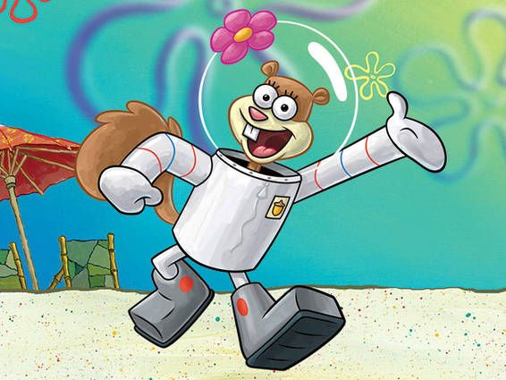

Spongebob Squarpants is een super vriendelijke spons en kan goed vrienden maken. Zelfs al vinden ze hem soms een beetje irritant, hij weet altijd een manier te vinden om toch in het hart van zijn vrienden te komen. Laten we zonder verder oponthoud beginnen met het introduceren van Spongebob en zijn aller beste vrienden!
- Spongebob Squarpant
- Patrick Ster
Patrick Ster is een grote, roze zeester en woont onder een grote steen naast zijn buren Spongebob en Octo. Patrick's beste vriend is ook Spongebob! Patrick houd ervan samen met Spongebob te kwallenvissen of bellen te blazen. Patrick wordt vaak gezien als de domste persoon in Bikibroek. Maar weetje, Patrick's intelligentie is misschien wel klein, zijn eetlust is dat zeker niet!
- Octo Tentakel
Octo Tentakel is een inktvis en woont naast Spongebob en Patrick in een grote Moab (zo'n groot hoofd van het paaseiland). Octo werkt net als Spongebob bij de Krokante Krab als cassiere, maar geniet veel minder van zijn werk dan Spongebob doet. In zijn vrije tijd houd Octo van klarinet spelen, schilderen en lekker relaxen. Octo word beschouwd als een nors en onverschillig persoon, vooral tegen Spongebob en Patrick. Toch beschouwd Spongebob Octo als 1 van zijn beste vrienden. Of dat wederzijds is, is nog de vraag...
- Eugene Krabs
- Sandy Wang

Sandy Wang is een eekhoorn die woont in een grote glaze koepel. Omdat zij niet kan ademen onder water net als de anderen, draagt sandy een ruimtepak, die haar constant zuurstof geeft. Sandy komt uit Texas en dat zien we veel terug aan de manier waarop ze praat en hoe ze altijd verlangt om terug te gaan. Sandy is een goede vriendin van Spongebob en leert hem karate. Ook is Sandy super slim (ze heeft zelfs een labratorium in haar huis).
- Sheldon J. Plankton
Sheldon J. Plankton, ook wel gewoon Plankton genoemd is, (en niet schrikken hoor) een plankton! wow dat wisten we niet!
Plankton woont samen met zijn robot vrouw Karen en zijn huisdier Spot in de Maatemmer, zijn eigen restaurant tegenover de Krokante Krab. Meneer Krab en Plankton waren vroeger goeie vrienden, maar na een discussie over het Krab Burger recept, scheidden de twee vrienden helaas en werd Plankton meneer Krabs aardsvijant. Met snode plannetjes probeert Plankton het geheime Krab Burger te stelen, maar faalt elke keer weer. Plankton is soms vrienden met Spongebob (ze hebben ooit samen een heel lied gezongen over vriendschap).
 Spongebob Squarpants is een gele, vierkante spons en woont samen met zijn huisslak gerrit in een ananas in het fictieve onderwaterstadje Bikinibroek. Spongebob heeft ook een baantje in de Krokante Krab als chefkok. Ook staat Spongebob bekend om zijn beste gerecht uit de Krokante Krab genaamd de Krab Burger. In zijn vrije tijd houd Spongebob van bellen blazen en kwallen vissen. Ook vind hij karate leuk!
Spongebob Squarpants is een gele, vierkante spons en woont samen met zijn huisslak gerrit in een ananas in het fictieve onderwaterstadje Bikinibroek. Spongebob heeft ook een baantje in de Krokante Krab als chefkok. Ook staat Spongebob bekend om zijn beste gerecht uit de Krokante Krab genaamd de Krab Burger. In zijn vrije tijd houd Spongebob van bellen blazen en kwallen vissen. Ook vind hij karate leuk!
 Eugene Krabs, ook wel bekend als meneer Krabs, is een rode krab en woont samen met zijn dochter Pearl in een anker. Meneer Krabs is de baas van de Krokante Krab en spongebob houd heel veel van hem (veel meer dan wij hier van onze baas zouden houden) en heeft daarom veel voor hem over. Meneer Krabs is dol op geld en hij vind het al verschrikkelijk om maar 1 cent te verliezen. Maar gelukkig hij wel veel om zijn collega's/vrienden.
Eugene Krabs, ook wel bekend als meneer Krabs, is een rode krab en woont samen met zijn dochter Pearl in een anker. Meneer Krabs is de baas van de Krokante Krab en spongebob houd heel veel van hem (veel meer dan wij hier van onze baas zouden houden) en heeft daarom veel voor hem over. Meneer Krabs is dol op geld en hij vind het al verschrikkelijk om maar 1 cent te verliezen. Maar gelukkig hij wel veel om zijn collega's/vrienden.